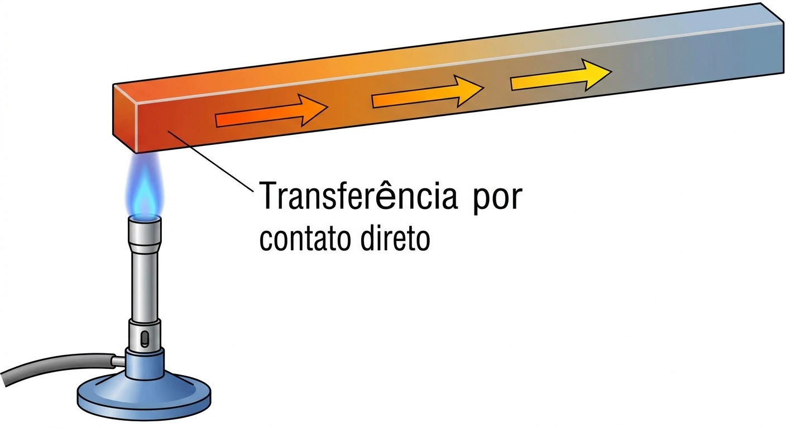
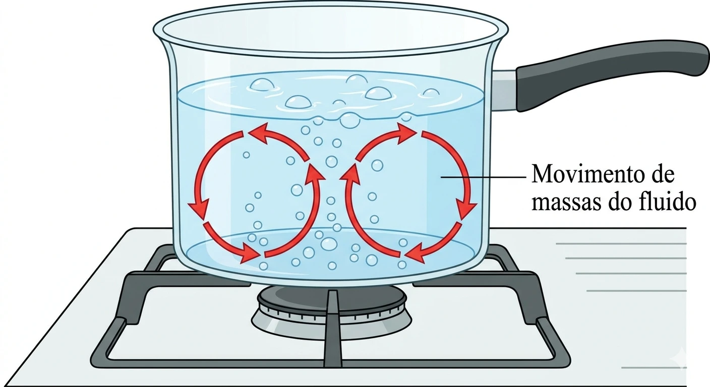
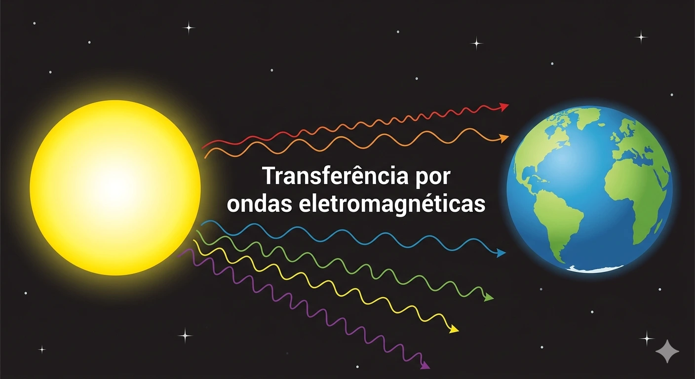
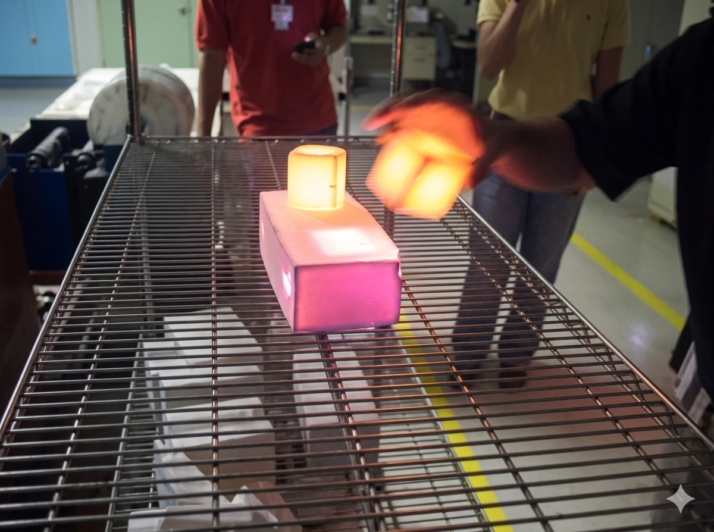
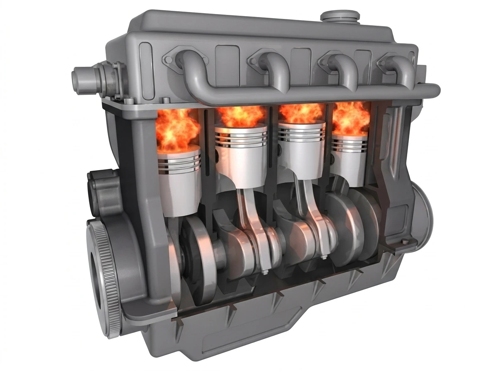
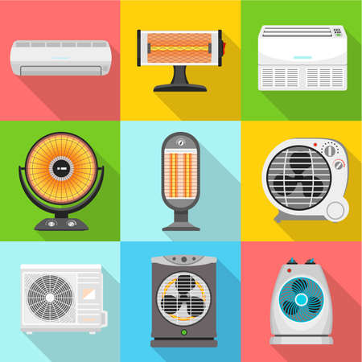
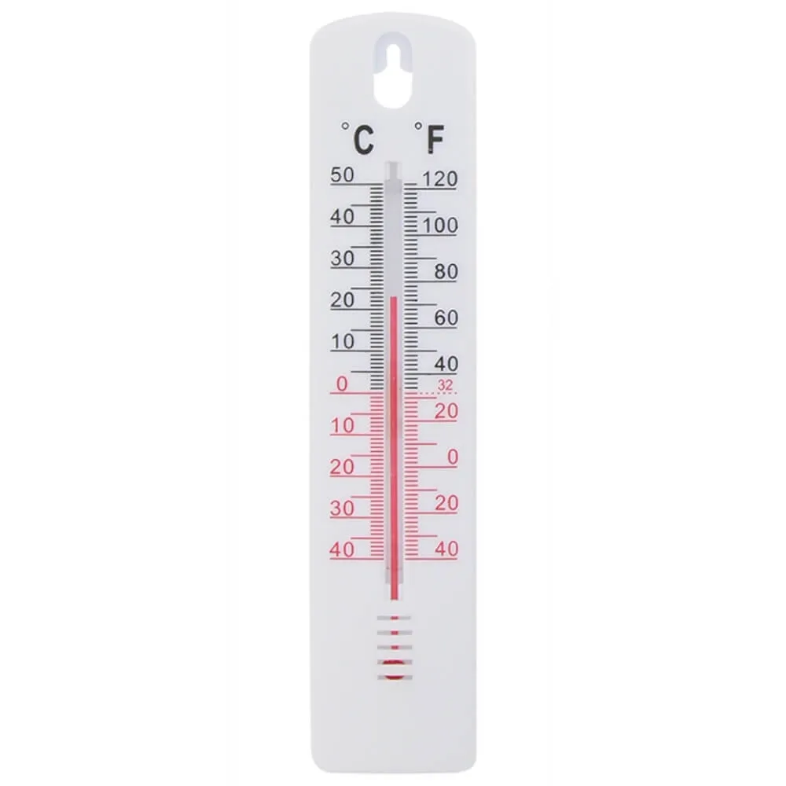
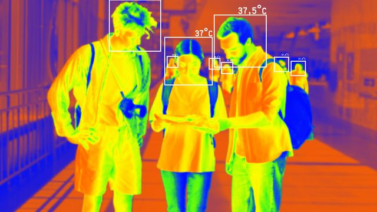

O que é transferência de calor?
A transferência de calor é um processo físico no qual a energia térmica passa de um corpo para outro devido à diferença de temperatura. Segundo Halliday, Resnick e Walker (2016), o calor sempre flui espontaneamente do corpo de maior temperatura para o de menor temperatura até atingir o equilíbrio térmico.
Referência: HALLIDAY, D.; RESNICK, R.; WALKER, J. Fundamentos de Física: Gravitação, Ondas e Termodinâmica. 10. ed. Rio de Janeiro: LTC, 2016.

Fonte: imagem elaborada pelo autor (2026).
Condução
A condução térmica ocorre principalmente em sólidos e acontece por meio do contato direto entre partículas. Quando uma extremidade de um metal é aquecida, a vibração das partículas aumenta e a energia é transmitida para as regiões mais frias do material.
Segundo Çengel e Ghajar (2012), os metais apresentam alta condutividade térmica devido à presença de elétrons livres, que facilitam o transporte de energia.
Referência: ÇENGEL, Y. A.; GHAJAR, A. J. Transferência de Calor e Massa. 4. ed. Porto Alegre: AMGH, 2012.
Exemplos de condução
- Colher metálica aquecendo dentro da panela.
- Ferro de passar roupa.
- Contato entre superfícies quentes e frias.

Fonte: imagem elaborada pelo autor (2026).
Convecção
A convecção ocorre em fluidos, como líquidos e gases. Nesse processo, o calor é transportado pelo movimento das massas do fluido.
Quando a água é aquecida, por exemplo, as regiões mais quentes ficam menos densas e sobem, enquanto as regiões frias descem, formando as chamadas correntes de convecção.
Referência: INCROPERA, F. P. et al. Fundamentos de Transferência de Calor e Massa. 7. ed. Rio de Janeiro: LTC, 2014.
Exemplos de convecção
- Água fervendo.
- Circulação do ar-condicionado.
- Brisas marítimas.

Fonte: imagem elaborada pelo autor (2026).
Radiação
A radiação térmica é a transferência de calor por meio de ondas eletromagnéticas. Diferentemente da condução e da convecção, esse mecanismo não necessita de meio material.
O principal exemplo é a energia emitida pelo Sol, que atravessa o espaço vazio até atingir a Terra.
Referência: HALLIDAY, D.; RESNICK, R.; WALKER, J. Fundamentos de Física: Gravitação, Ondas e Termodinâmica. 10. ed. Rio de Janeiro: LTC, 2016.
Exemplos de radiação
- Calor do Sol.
- Churrasqueira.
- Lâmpadas incandescentes.
Galeria de Imagens

Materiais isolantes

Transferência térmica em combustão.Radiação emitida pelo Sol.

Convecção em sistemas térmicos.Tipos de Medidores de Temperatura
Exemplos de instrumentos utilizados para medir temperatura e suas aplicações.

Receba conteúdos sobre Transferência de Calor

Referências Bibliográficas
ÇENGEL, Y. A.; GHAJAR, A. J. Transferência de Calor e Massa. 4. ed. Porto Alegre: AMGH, 2012.
HALLIDAY, D.; RESNICK, R.; WALKER, J. Fundamentos de Física: Gravitação, Ondas e Termodinâmica. 10. ed. Rio de Janeiro: LTC, 2016.
INCROPERA, F. P. et al. Fundamentos de Transferência de Calor e Massa. 7. ed. Rio de Janeiro: LTC, 2014.
Imagens elaboradas pelo autor utilizando elementos gráficos próprios para fins educacionais.